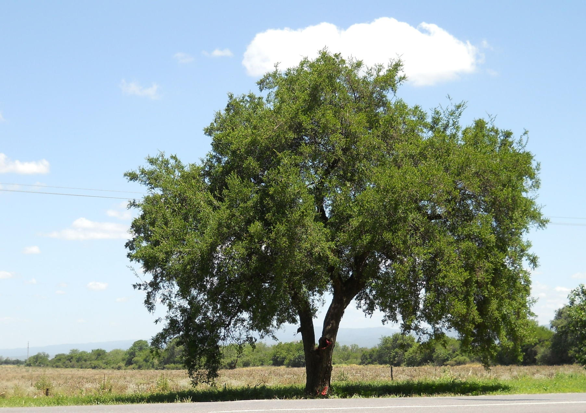
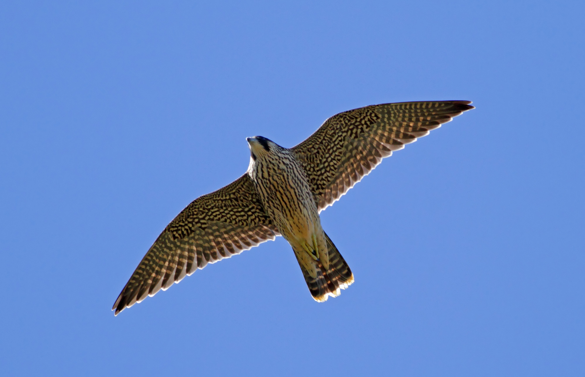
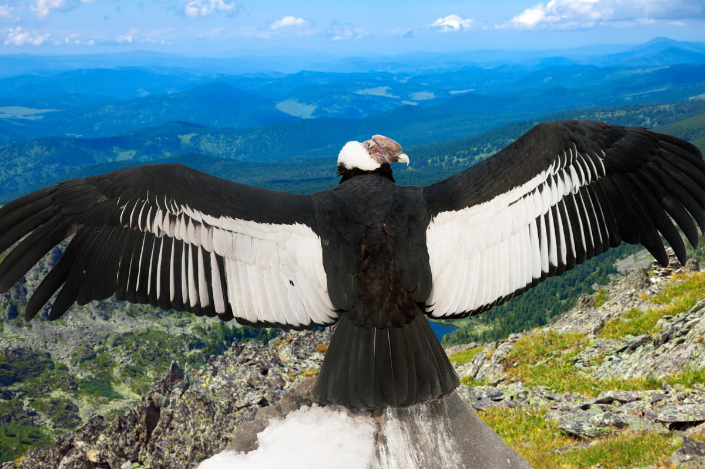
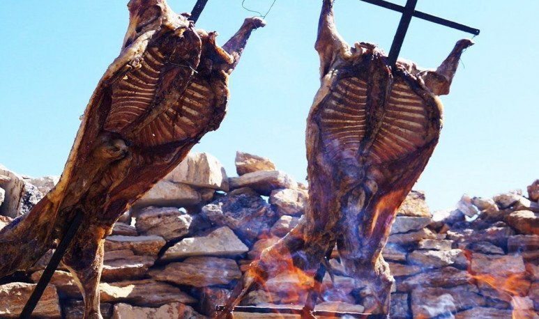

Monasterio de las monjas Benedictinas
Monasterio de las monjas Benedictinas
Museo Minerológico La Carolina

La Carolina

La Carolina

La Carolina

Estadio La Pedrera
Flora y fauna
Flor de Retama

Árbol de Algarrobo

Flor de Tintitaco

Árbol de Quebracho

Fruto de Piquillín

Flor de Jarilla

Caballos salvajes

Caballos salvajes
Caballos salvajes
Jabalíes salvajes

Liebres

Puma andino

Tortuga de tierra

Zorro
Carancho

Halcón peregrino

Halcón peregrino
Cóndor andino

Cóndor andino

Cóndor andino
Comida típica
Locro

Corderito a la parrila
Humita

Chivito
Fiesta del Chivo